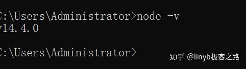
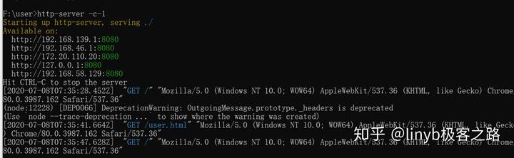
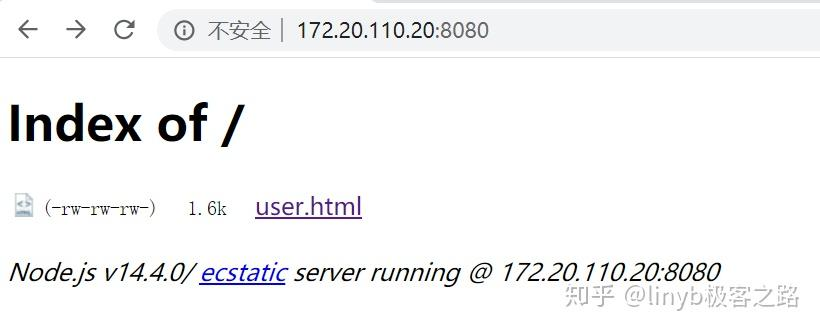
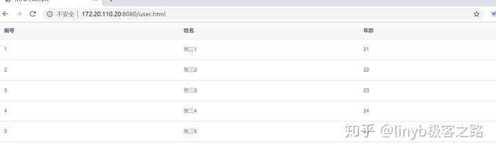

简介
http–server是一个简单的零配置命令行http服务器。 它足够强大，足以用于生产用途，但它既简单又易于破解，可用于测试，本地开发和学习
应用场景
1、局域网访问静态页面
访问本地计算机中的文件都是基于file协议，如果要开放我们的本地文件给局域网人员访问，是不能使用file协议。得用http协议或者ftp协议。而基于http协议的http–server就是一个不错的选择
2、处理页面跨域
当页面含有跨域的请求，此时可以利用http–server，使用命令
http-server -p 8080 -P https://abc.org
//-p 本地运行端口 -P 将所有无法在本地解析的请求代理到给定的URL进行处理3、验证前端页面是否打包正常
现在的项目很多都前后端分离的架构，前端通常会打包dist文件丢到测试或者其他环境，我们可以利用http–server来跑下打包的dist目录内容，验证打包的内容是否正确
安装
安装的前置条件
因为http–server依赖node.js,因此在安装之前，请确保安装的环境已经装有node.js。可以通过命令
node -v验证是否已经安装node.js

通过npm进行安装
npm install http-server -g注： 如果在安装过程中，发现安装太慢，可以先配置淘宝镜像，再进行安装。配置镜像的命令如下
npm config set registry https://registry.npm.taobao.org配置后可通过下面方式来验证是否成功
npm config get registry用法
http-server [path] [options]
path就是你当前运行该命令下对应的某个文件夹名称可用选项
- –p或––port要使用的端口（默认为8080）
- –a 要使用的地址（默认为0.0.0.0）
- –d显示目录列表（默认为true）
- –i显示autoIndex（默认为true）
- –g或者––gzip当启用（默认为false）时，它将./public/some–file.js.gz代替./public/some–file.js当文件的gzip压缩版本存在且请求接受gzip编码时。
- –e或者––ext如果没有提供默认文件扩展名（默认为html）
- –s或者––silent从输出中抑制日志消息
- ––cors通过Access–Control–Allow–Origin标头启用CORS
- –o 启动服务器后打开浏览器窗口
- –c设置缓存控制max–age标头的缓存时间（以秒为单位），例如–c1010秒（默认为3600）。要禁用缓存，请使用–c–1。
- –U或––utc在日志消息中使用UTC时间格式。
- –P或者将––proxy所有无法在本地解析的请求代理到给定的URL。例如：–P http://someurl.com
- –S或––ssl启用https。
- –C或––certssl cert文件的路径（默认值:) cert.pem。
- –K或––keyssl密钥文件的路径（默认值:) key.pem。
- –r或––robots提供/robots.txt（其内容默认为User–agent: *\nDisallow: /）
- –h或––help打印此列表并退出。
示例
进入目标文件夹，输入hs或者http–server命令，不过推荐使用如下命令
http-server -c-1只输入http–server的话，更新了代码后，页面不会同步更新。



总结
http–server可以做静态资源服务器，也可以做调试、测试的前端服务器。甚至可以用于实现前后端分离。还没有使用过的朋友，可以尝鲜下
官方文档
https:// github.com/http–party/h ttp–server